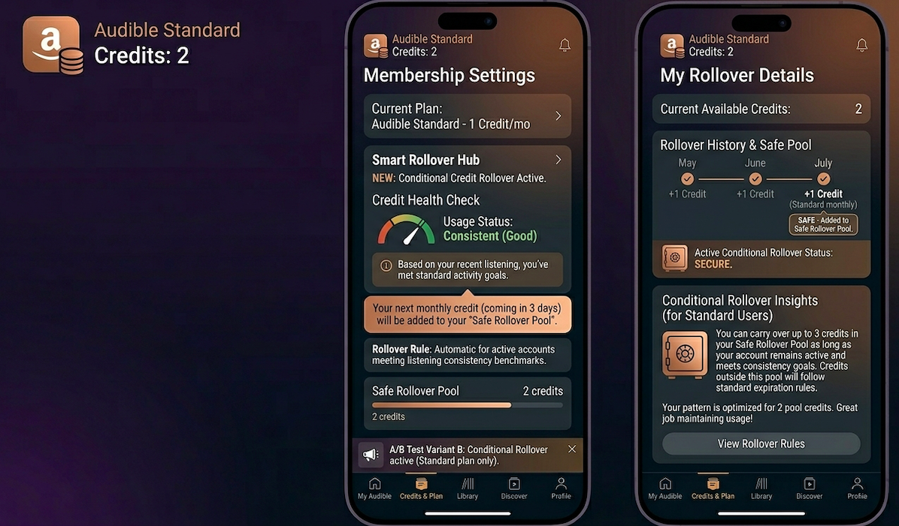
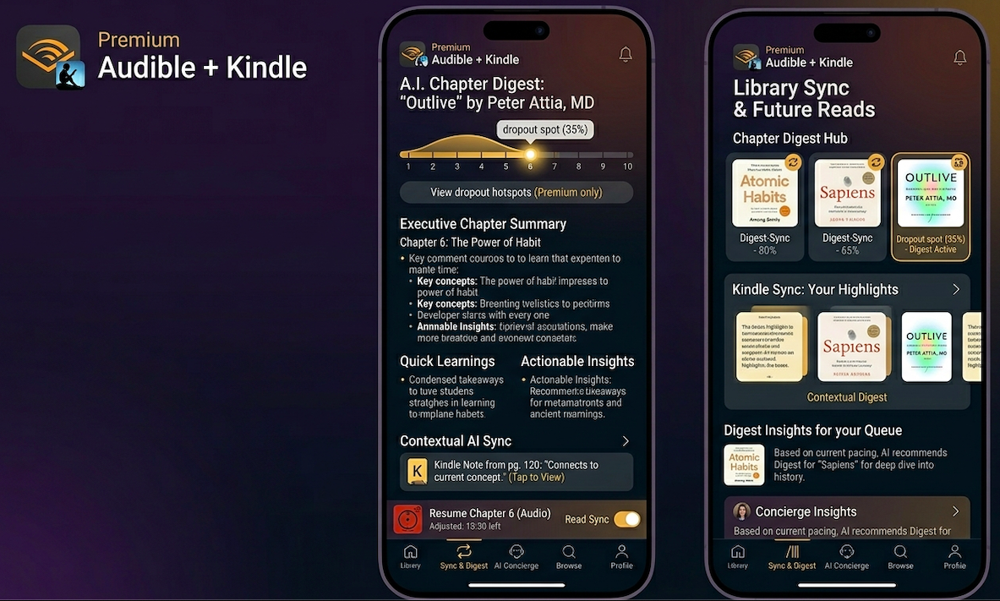
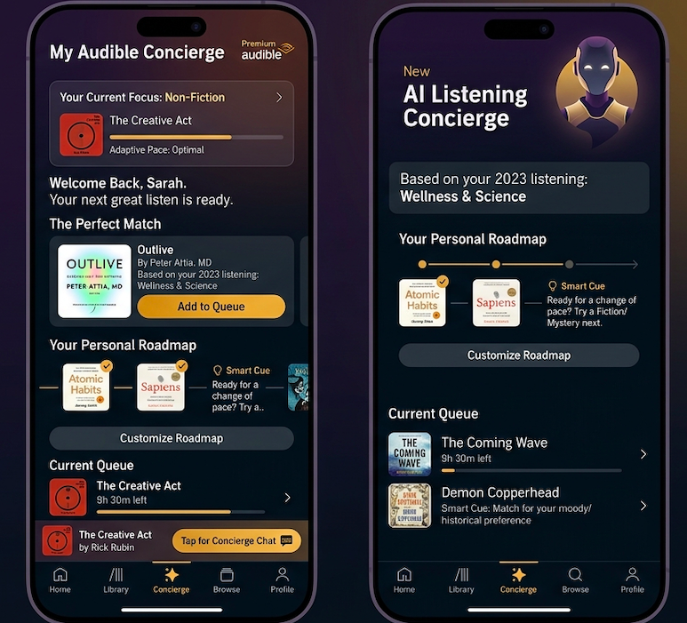

The audiobook market grew 13% in 2024 to ~$2.22 billion, and Audible sits at the center of it with a 63% market share and a catalog of over 100 million titles. Yet the platform faces a structural shift: Spotify's 276 million Premium subscribers now get audiobooks bundled at no extra cost, quietly eroding the case for a dedicated Audible subscription.
As a result, Audible should focus on building features that will increase engagement: are users finishing books, building habits, and becoming the kind of listeners who would never leave?
User Segmentation
We can segment users by obvious factors like gender, location, age, and other demographic factors. But when thinking about ways to increase user engagement with Audible, it helps to consider two key segmentations. Together, they define not just who the user is, but what it would take to make Audible indispensable to them.
Pricing Tier
Pricing Tier: An Audible user can be on a standard plan which includes 1 audiobook a month, or a premium tier of either 1 or 2 audiobooks a month and the ability to keep books even after cancelling a subscription.
Consumption Format
Preferred Consumption Format: A user might prefer consuming books in audio format (via Audible, Spotify, or other competitors), in written but digital format (via Kindle), or on paper (via a physical book).
Features Mapped Across Segments
The table below maps some potential feature ideas that would appeal to users across pricing tier and preferred consumption format.
| Audible | Kindle / Digital | Paper | |
|---|---|---|---|
| Standard | Listening Streaks: daily goals with streak rewards and early access at milestones Conditional Credit Rollover: roll over unused credit if you finish ≥1 book that month Listening Buddy: pair with a friend, track progress, unlock shared bonus credit |
Kindle + Audible Bundle Upgrade: matching Kindle ebook at a steep discount when a Standard member picks their credit title Immersion Reading Milestone: first time reading + listening together unlocks a bonus credit |
QR Bookmark Insert: physical books shipped with a bookmark linking to the Audible audiobook Referral Gift Card: $5 Audible trial gift card included in certain Amazon book deliveries |
| Premium | AI Listening Assistant: personalized 3-month listening roadmap based on genres, mood, and pace Originals Early Drop: Premium members get Audible Originals 2 weeks early |
Goodreads Deep Sync: auto-mark shelves as "read" when you finish in Immersion mode Chapter Digest: auto-generated 3-sentence recap of any chapter you missed |
Swap Program: scan a physical book barcode to get the Audible version at 50% off Curated Box Add-On: optional quarterly physical book box, curated by listening history Unified Annotation Layer: photo-scan physical margin notes, synced with Audible/Kindle annotations |
Which Features Should Audible Build?
Conditional Credit Rollover
The most common reason Standard subscribers cancel isn't that they dislike Audible. It's that they feel like they're wasting money on a month they didn't use. Tying rollover to completion flips that dynamic: instead of punishing inactivity with an expiring credit, Audible rewards follow-through. Users who finish a book feel accomplished and users who know a rollover is on the line have a reason to open the app.

Chapter Digest
The 40–60% abandonment cliff is one of the most consistent patterns in long-form nonfiction listening. Users fall behind, lose the thread, and stop opening the app. Chapter Digest addresses the actual reason people abandon books: not boredom, but the social friction of feeling lost. A three-sentence recap lowers the re-entry cost to almost zero. Instead of starting over or pretending to remember, the listener just picks up where they left off. This is the difference between a book that gets finished and one that sits in the queue for six months, and a subscriber who stays versus one who decides Audible "isn't really for them."

AI Listening Assistant
Most people don't cancel Audible because they found something better, they cancel because the momentum ran out. They finished a book, didn't know what to listen to next, and the app sat unopened long enough that the subscription started to feel optional. The AI assistant closes that gap before it opens. A personalized roadmap that knows your pace, your mood, and your history means there's always something queued, and the longer you use it, the more irreplaceable it becomes.

Conclusion
Audible's retention problem isn't that users dislike the product. It's that the product doesn't fight hard enough to stay in their lives. Credits expire. Books get abandoned. Queues run dry.
Each of these is a small friction, but compounded across millions of subscribers, they represent a quiet churn engine running in the background. Conditional Credit Rollover removes the guilt. Chapter Digest removes the dropout. The AI Assistant removes the empty queue.
Together they address not what Audible offers, but whether users actually experience it, which is ultimately the only engagement metric that matters.